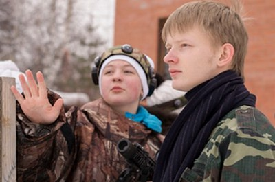
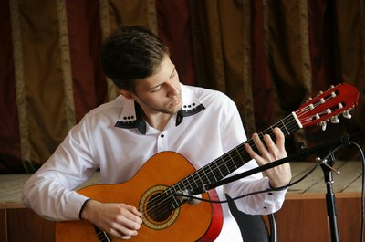

Техническая документация о программе «Моделирование работы аэропорта»
Навигация
О программе
«Система моделирования работы железнодорожной станции» была создана в качестве учебной программы в ходе курса «Технология программирования». Она предназначена для создания модели железнодорожной станции (ждс) и наглядной демонстрации ее работы. Программа имеет средства для создания топологии ждс и расписания движения поездов различных категорий.Пользователь имеет возможность создать собственную модель жд станции, используя предоставленные графические элементы, и, составив расписание, просмотреть работу станции в модельном времени или выбрать для запуска уже имеющуюся ждс.
Проект реализован студентами группы 6401-090301D:
 Клашкин Михаиллюбит разные игры: компьютерные, настольные, а также в лазертаг, а в школе Миша был каратэ-пацан и ходил на древковое оружие, но больше всего на свете Миша любит спать
Севостьянова Юлиязакончила школу с уклоном на английский, также закончила школу искусств №4, помимо этого Юля ходила учиться играть на гитаре, но так тяга к музыке у нее не проявилась, сейчас Юля продолжает активную жизнь и состоит в СПО <<Рассвет>>
 Мартюшов Александрсостоит в Самарском областном клубе Авторской песни имени Валерия Грушина, играет в компьютерные игры, а еще говорит, что в школе много чем занимался
Султангулова Иринаиграла в волейбол за районную сборную,а после в в сборной университета, также Ирина любит смотреть сериалы и иногда читать